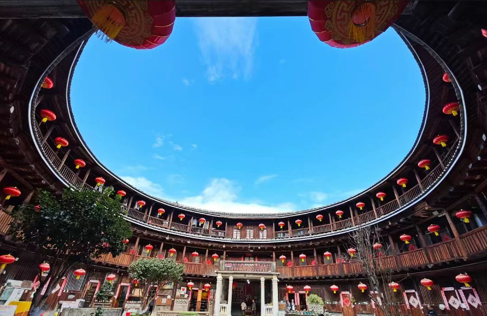

传奇：福建土楼是中国东南部福建省山区独特的客家民居建筑，是世界独一无二的大型夯土民居建筑，被誉为"东方古城堡"。主要分布在闽西的永定县和闽南的南靖县、华安县等地，现存土楼约3000座。土楼产生于宋元时期，成熟于明清时期，是客家先民为抵御外敌、防范野兽、聚族而居而建造的集体住宅。2008年7月6日，福建土楼（包括永定、南靖、华安的46座土楼）被联合国教科文组织列入《世界遗产名录》。
代表土楼：
游览攻略：
交通信息：福建土楼分布在龙岩市永定区、漳州市南靖县和华安县。①飞机：到厦门高崎机场或龙岩冠豸山机场，转乘汽车；②火车：到龙岩站、南靖站，转乘旅游专线车；③自驾：从厦门、福州、龙岩出发，经高速、省道可达。景区间有旅游专线车，但班次较少，建议包车或自驾。土楼分布分散，建议在景区内住宿1-2晚。
迁徙背景：客家人是汉族的一个重要民系，祖籍中原（今河南、山西一带）。自西晋永嘉之乱（311年）起，为避战乱，中原汉人开始南迁，历经五次大迁徙：①第一次（317-879年）：西晋末至唐末，从中原迁至长江中下游；②第二次（880-1126年）：唐末至北宋，从长江中下游迁至江西、福建；③第三次（1127-1644年）：南宋至明末，从江西、福建迁至广东、广西；④第四次（1645-1867年）：明末至清中期，从广东、福建迁至四川、台湾及东南亚；⑤第五次（1867年后）：太平天国后，迁至海南、海外。客家先民在迁徙中形成"客而家焉"的民系。
入闽定居：唐末黄巢起义（878-884年）期间，大量中原汉人南迁入闽。宋代，金兵南侵，又有大批汉人南迁。这些移民被称为"客家人"，意为"客居他乡之人"。他们进入福建西部、南部的山区，面对恶劣的自然环境和土著居民、盗匪的威胁，为求生存，开始建造具有防御功能的集体住宅——土楼。土楼的建造技术，融合了中原的夯土技术和当地的自然条件。
土楼兴起：土楼产生于宋元时期，成熟于明清时期。①宋元时期（960-1368年）：早期土楼多为方形，规模较小，如馥馨楼（建于769年）、裕昌楼（建于1368年）；②明代（1368-1644年）：土楼技术成熟，出现大型圆楼、方楼，如集庆楼（建于1419年）、承启楼（始建1628年）；③清代（1644-1911年）：土楼鼎盛，形式多样，技术精湛，如振成楼（建于1912年）、二宜楼（建于1770年）；④民国以后（1912年至今）：土楼建造减少，现存土楼多为清代、民国所建。
建造原因：客家人建造土楼的主要原因：①防御需要：抵御盗匪、野兽、土著居民侵扰；②聚族而居：保持宗族团结，传承中原文化；③节约土地：山区耕地稀少，土楼集中居住，节约用地；④适应环境：厚墙可隔热保温，适应山区气候；⑤就地取材：用黄土、杉木、竹、石等当地材料，造价低廉。土楼是客家人智慧的结晶，体现了"天人合一"的建筑理念。
重要人物：①黄氏家族：永定洪坑村土楼主要建造者，建振成楼、福裕楼、奎聚楼等；②江氏家族：南靖田螺坑土楼建造者；③张氏家族：华安大地村土楼建造者；④胡氏家族：南靖塔下村土楼建造者。这些家族世代建造土楼，传承建造技艺。
现代表现：20世纪80年代，福建土楼引起国内外关注。1986年，中国邮政发行"福建土楼"邮票。1999年，福建土楼申报世界文化遗产。2008年7月6日，福建土楼列入《世界遗产名录》。如今，土楼成为旅游热点，年接待游客数百万人次。许多土楼仍有居民居住，是"活着的世界遗产"。
建筑类型：土楼按形状分为：①圆楼：平面圆形，如承启楼、振成楼；②方楼：平面方形，如和贵楼、遗经楼；③五凤楼：前低后高，如大夫第、福裕楼；④椭圆形楼：平面椭圆形，如文昌楼；⑤八卦楼：按八卦布局，如振成楼；⑥半月楼：平面半月形。按结构分为：①内通廊式：各层有环形走廊相通，如承启楼；②单元式：每户独立单元，如二宜楼；③混合式：通廊与单元结合。
结构体系：土楼是生土建筑杰作。①基础：用大石块砌筑，深1-2米，防潮、防蚁；②墙体：用黄土、砂石、石灰等按比例拌和，用模板夯筑，俗称"干打垒"。墙厚1-2米，底层厚可达1.5米，向上逐渐收分。墙体中加入竹片、木条作"筋骨"，增强抗震性；③木构架：内部为木结构，穿斗式或抬梁式，柱、梁、枋、椽用榫卯连接；④屋顶：双坡悬山顶，铺青瓦。出檐深远，防雨遮阳。
防御系统：土楼是完善的防御体系。①外墙：底层不开窗，2层以上开小窗，内大外小，便于射击观察；②大门：厚10-15厘米，外包铁皮，有防火装置；③瞭望台：顶层四角设瞭望台；④传声洞：墙内有垂直传声洞，可传递信息；⑤暗沟：有排水暗沟，防敌人从水道潜入；⑥水井：楼内有水井，被围困时可自给；⑦粮仓：储存粮食，可长期固守。一座土楼就是一座坚固的城堡。
空间布局：土楼是"小社会、大家庭"。①中心：祖堂（祠堂），祭祀祖先、议事、婚丧礼仪；②内环：学堂、仓库、磨坊、厨房等公共设施；③外环：居住层，一般3-5层，1层厨房，2层粮仓，3层以上卧室；④天井：中心庭院，公共活动空间，有水井、石臼等；⑤楼梯：2-4部公共楼梯，均匀分布；⑥走廊：各层有环形走廊，连接各户。
建造工艺：土楼建造工艺复杂。①选址：看风水，背山面水，坐北朝南；②备料：准备黄土、砂石、石灰、竹木、石料等；③夯墙：用墙枋（模板）分层夯筑，每层高40厘米，晾干后再夯上层；④立架：墙体完成后，立木柱、架梁枋；⑤盖顶：上梁、铺椽、盖瓦；⑥装修：安装门窗、楼梯、地板，粉刷墙面。建一座大土楼需3-5年，耗费大量人力物力。
抗震防火：土楼有良好的抗震防火性能。①抗震：墙厚基深，重心低；圆形结构，受力均匀；木构架柔韧，可吸收地震能量；②防火：土墙不燃，屋顶有防火墙（马头墙）；天井、水井可蓄水防火；厨房集中，设烟道；③防风：圆形结构，减小风压；厚墙隔热保温，冬暖夏凉。土楼可抗7级地震、12级台风，有的已屹立数百年。
宗族制度：土楼是客家宗族社会的缩影。①聚族而居：一座土楼居住一个家族，少则几十人，多则数百人，都是同姓同宗；②族长制：由辈分高、有威望的长者任族长，管理族内事务；③族规：有严格族规，规范族人行为；④族产：有公田、公山、公屋等族产，收入用于祭祀、教育、公益；⑤族谱：记载家族历史、世系、家训。土楼维系了宗族团结，传承了中原文化。
教育传统：客家人重视教育，"耕读传家"。①学堂：土楼内设学堂（私塾），聘请塾师教育子弟；②劝学：族规规定，子弟必须读书，成绩优秀者族内奖励；③楹联：土楼楹联多鼓励读书，如"振作哪有闲时少时壮时老年时时时须努力，成名原非易事家事国事天下事事事要关心"（振成楼）；④人才辈出：土楼培养了许多人才，如振成楼出过进士、举人、博士数十人。客家地区有"文化之乡"美誉。
民俗节庆：土楼民俗活动丰富。①春节：舞龙舞狮、打糍粑、做年糕；②元宵：游灯、猜谜、放烟花；③清明：祭祖扫墓，全族聚餐；④端午：包粽子，赛龙舟；⑤中秋：赏月，吃月饼，烧塔；⑥婚嫁：按"六礼"（纳采、问名、纳吉、纳征、请期、亲迎）进行，热闹隆重；⑦丧葬：厚葬重祭，体现孝道。这些民俗传承了中原传统，又有地方特色。
客家美食：客家菜以咸、香、肥为特点。①盐焗鸡：用盐焗制，皮脆肉嫩；②酿豆腐：豆腐中酿入肉馅，煎煮而成；③梅菜扣肉：梅干菜与五花肉同蒸，肥而不腻；④芋子包：芋头泥做皮，包入肉馅，蒸熟食用；⑤牛肉丸：手工捶打，弹性十足；⑥糍粑：糯米蒸熟捶打，沾糖或包馅；⑦擂茶：茶叶、芝麻、花生等擂碎，冲入开水，佐以米果、炒豆。土楼农家乐可品尝地道客家菜。
民间艺术：客家民间艺术多彩。①山歌：即兴编唱，内容广泛，有劳动歌、情歌、劝世歌等；②汉剧：客家地方戏，唱腔丰富，表演细腻；③木偶戏：提线木偶，传统剧目；④民间舞蹈：采茶舞、竹马灯、船灯等；⑤工艺美术：木雕、石雕、泥塑、剪纸、刺绣等。土楼内常举办民间艺术表演。
宗教信仰：客家人信仰多元。①祖先崇拜：供奉祖先牌位，按时祭祀；②佛教：信仰观音、弥勒等；③道教：信仰关公、城隍等；④自然崇拜：崇拜土地、山神、水神等；⑤基督教、天主教：清末传入，有部分信徒。土楼内设神龛，供奉多种神祇，体现"万物有灵"观念。
世界遗产价值：2008年7月6日，福建土楼在第32届世界遗产大会上被列入《世界遗产名录》。世界遗产委员会评价："福建土楼是东方血缘伦理关系和聚族而居传统文化的历史见证，是世界上独一无二的大型生土夯筑的建筑艺术成就，具有'普遍而杰出的价值'。" 福建土楼符合世界遗产标准：①代表一种独特的艺术成就；②能在一定时期内对建筑艺术、纪念物艺术、城镇规划或景观设计方面的发展产生重大影响；③能为一种已消逝的文明或文化传统提供独特的见证；④可作为一种建筑或建筑群或景观的杰出范例。
建筑价值：福建土楼是世界生土建筑的奇迹。①材料科学：用生土、砂石、石灰等普通材料，创造出坚固耐用的宏伟建筑；②结构科学：圆形结构受力均匀，抗震性能优越；③防御科学：完善的防御体系，体现古代军事防御思想；④生态科学：就地取材，节能环保，冬暖夏凉，适应山区环境；⑤工艺科学：夯土技术达到顶峰，可建高十几米、直径近百米的巨型建筑。土楼是古代劳动人民智慧的结晶。
文化价值：土楼是客家文化的物质载体。①宗族文化：体现聚族而居、尊祖敬宗的宗法制度；②教育文化：体现重教兴学、耕读传家的传统；③民俗文化：保存了丰富的客家民俗、礼仪、节庆；④建筑文化：融合中原建筑文化与福建地方特色；⑤移民文化：记录了客家民系南迁、开发山区的历史。土楼是"活着的文化遗产"，仍有居民居住，传承着传统生活方式。
社会价值：土楼具有重要的社会价值。①社区价值：土楼是和谐的社区典范，居民互助互爱，和睦相处；②教育价值：作为爱国主义教育基地、传统文化教育基地，对青少年进行教育；③研究价值：是研究建筑学、社会学、民族学、历史学、民俗学的重要实物资料；④旅游价值：是世界知名的旅游目的地，年接待游客数百万，带动地方经济发展；⑤国际交流价值：是中外文化交流的窗口，许多外国政要、学者参观土楼。
科学价值：土楼蕴含丰富的科学智慧。①建筑科学：夯土技术、木结构技术、抗震技术等；②环境科学：选址、布局适应环境，生态友好；③材料科学：生土材料的配比、处理、应用；④社会工程：大型工程的规划、组织、管理；⑤军事工程：防御工事的设计、建造。现代建筑可从土楼中汲取灵感，如生态建筑、抗震建筑、社区规划等。
保护与传承：福建土楼得到有效保护。①法律保护：1988年，福建土楼被列为全国重点文物保护单位；2008年，列入《世界遗产名录》；②规划保护：编制《福建土楼保护规划》，划定保护区、缓冲区；③工程保护：对土楼进行抢险加固、维修保养；④活态保护：鼓励居民继续居住，保持土楼活力；⑤研究展示：建立土楼博物馆，开展学术研究，出版研究成果；⑥旅游管理：控制游客数量，规范旅游行为，实现保护与利用的平衡。福建土楼的保护经验，为世界文化遗产保护提供了范例。